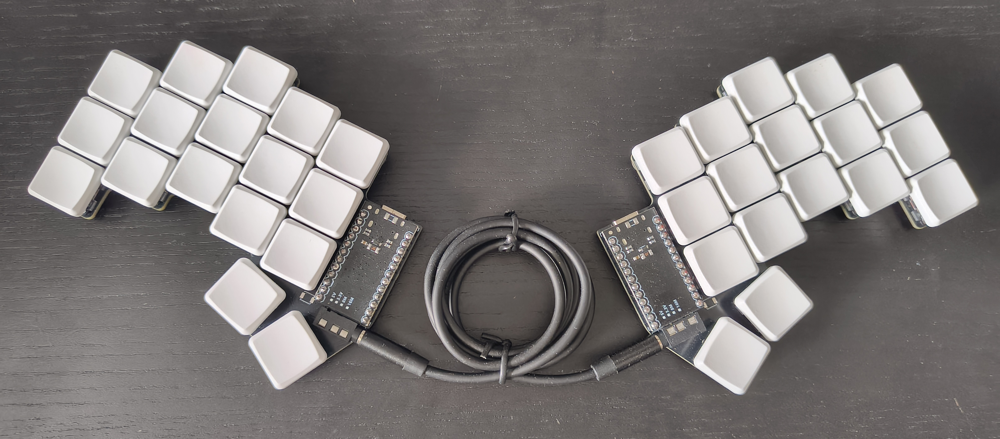

Somewhere along my "research" I conclude that a 34 key keyboard would be the best option. Now I clearly am not thinking about good ergonomics anymore but somehow I convinced myself that making this funny keyboard is fun. Taking Ben Vallacks video as a main inspiration I rip out the the files I want from this git repo. and modify them a bit with this pcb making software called KiCad. I trimed around the egdes of the pcb so that it looks like there is not exra matrial sticking outside and made it look nice and compact. My iterations on the Sweep below. And a fork I made to share these designs.


After fighting with this software I got a nice enough model out and ordered it along with the other parts I need in order to create my keyboard. I pick out some red Khali v1 switches because I dont like to be obnoxiiously loud and blank white keycaps cuz im cool like that.
So thats cool and all but when you have all of the components and and you succesfully put them together after a bit of soldering and assembly, you get to now install the software of your choice on your keyboard, im my case QMK which lets my convenienlty oriented buttons to act like a keyboard. One aspect of this step is choosing a key layout because this is insanely custom already, but as usualy there is allways a default layout which I opted for, for now. To give you an idea of how this layout works, just like your keyboard on your phone has layers for typing letters, numbers and special characters, the authors of this layout use this concept to give this physical keyboard multiple layers for all of the keys that it is missing.
And thats it for the most part, apart from the time spent "debugging" or fixing your skill gap while using the various software and failing I preset a final septup of sorts. I think it looks pretty neat.
